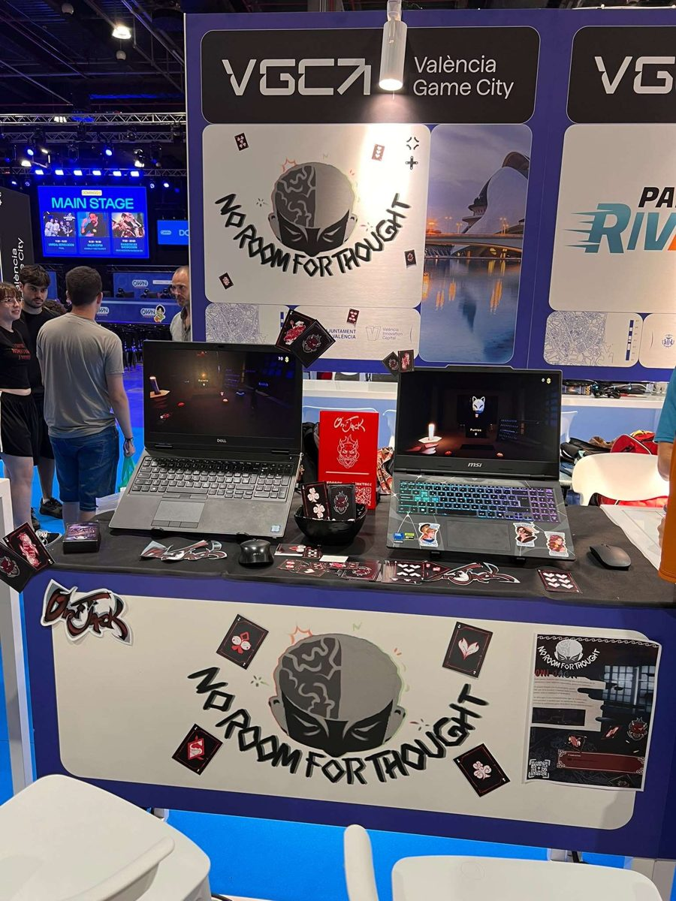
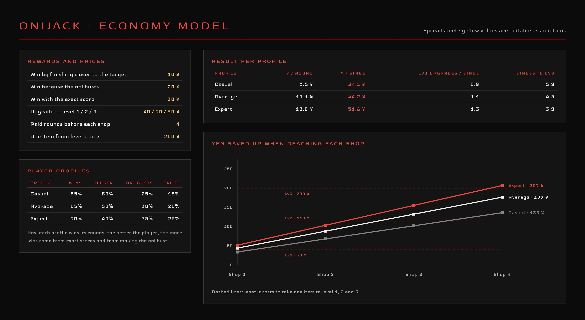
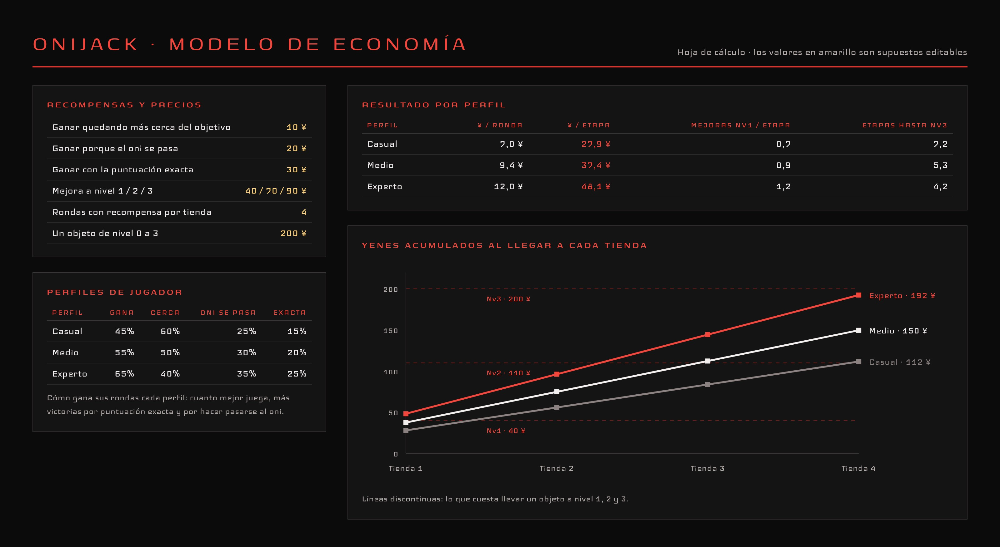
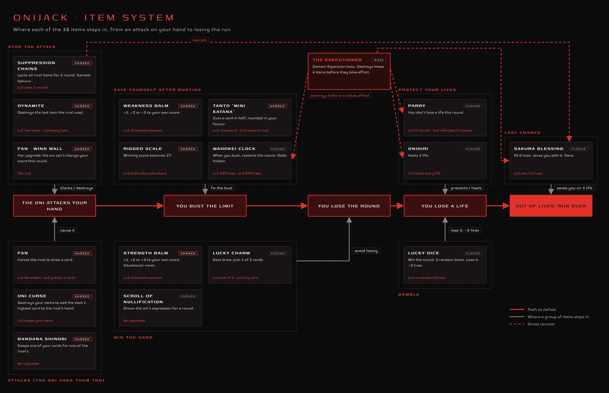
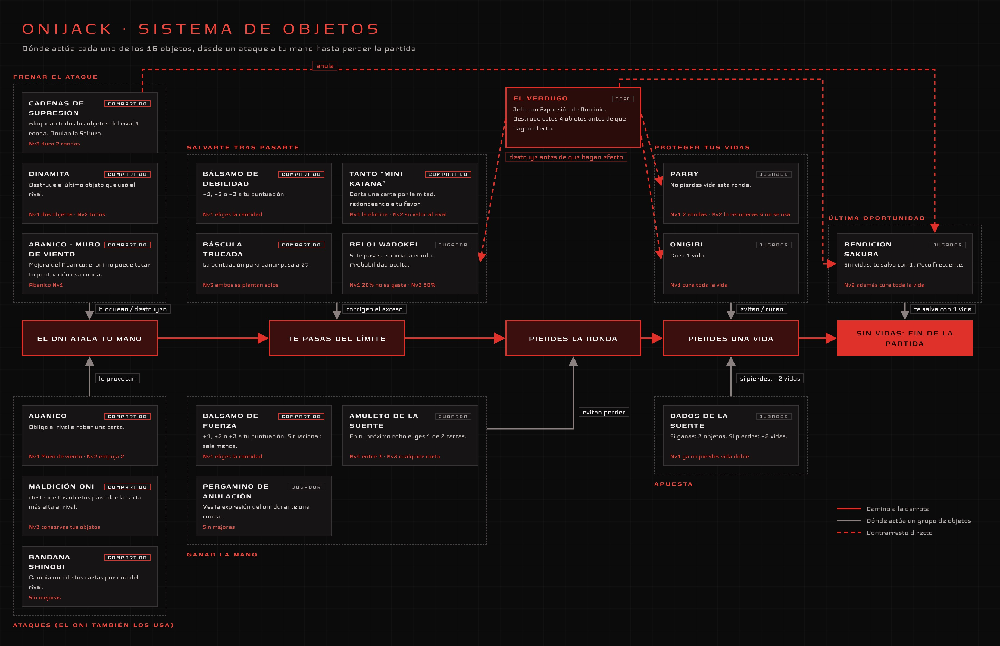
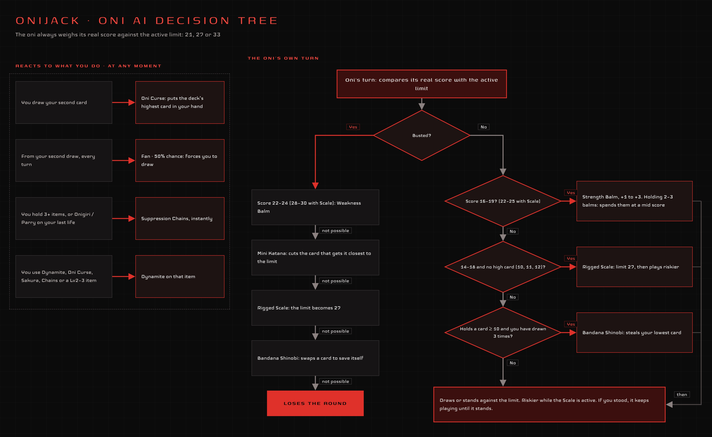
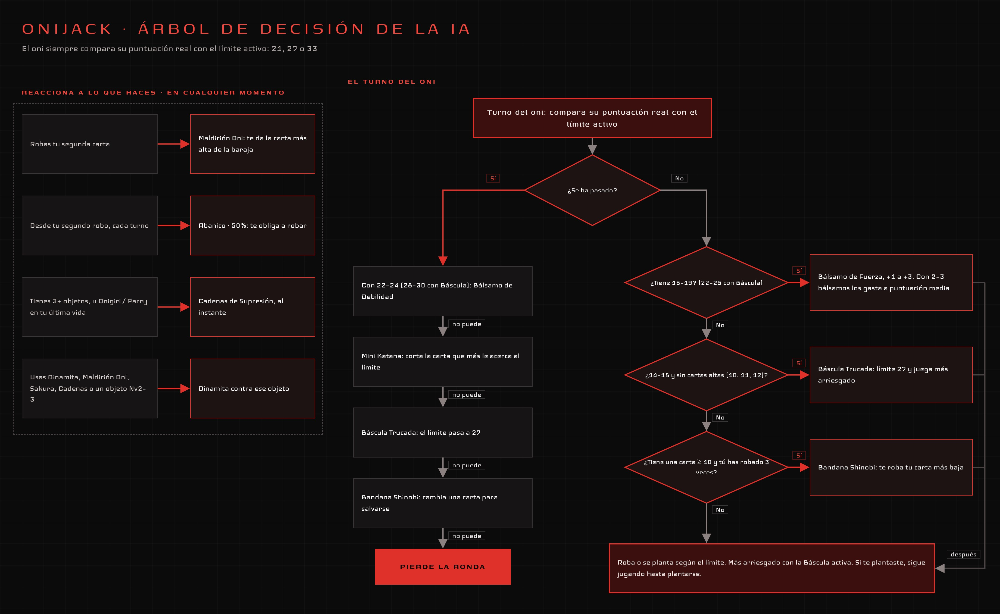

Want to try the original jam build? Play it on itch.io →
Overview
You're trapped in a room in Japan with an oni who offers you a card game to survive as long as you can. OniJack is a first-person blackjack roguelike in low-poly, PS2-style 3D, where items change both the plays and the rules themselves — and the demon doesn't play fair.
It was born at Global Game Jam 2026 (Florida Universitària site) with team NRFT — and won the jam. After the jam, as Design Director, I took the game into a new version with a large set of changes that define how every system works — and it's now on its way to Steam.
Core loop
My role
I was OniJack's Design Director and owned every phase of the design, from the initial concept to the final balance pass:
- Designed the core gameplay How classic blackjack becomes a duel of reading and risk against the demon.
- Designed the progression and systems Stages, bosses, cursed rounds, economy and shop.
- Designed every item and its interactions 16 items — player-only and shared — with up to 3 upgrade levels.
- Designed the oni's AI behaviour When and how it uses each item based on the active limit and its score.
- Balanced every stage of the run Difficulty curve, rewards, prices, probabilities and the AI's decision thresholds.
- Defined feedback and player experience VFX and audio direction, UI readability, fair rules and achievements.
From the jam to Steam
An endless run against a single oni who only swapped masks as the rounds went by.
The run is split into stages, with bosses and shop stops to buy upgrades, to give players a sense of progression, challenge and replayability. Each part is broken down below.
Run structure
Progress is measured in rounds survived. A run is split into stages, and every stage ends with a boss:
- To beat the boss you must win twice, and both sides draw 2 items in those rounds.
Cursed rounds
From stage 2 onwards, any round can turn cursed, with a probability that rises every stage:
Each cursed round applies a special rule:
- Blind Hand: your first card is hidden.
- Total chaos: both sides discard all their items and draw 4 new ones.
- Greed: both sides draw 2 cards instead of 1.
- Sealed Pact: if you use an item, you can't draw any more cards.
Stages. Splitting the run into stages gave the project a more linear direction. Because they can progress, players feel pulled forward: they want to discover which item upgrades and combos they can unlock, and to face each boss’s challenge.
Beating a boss more than once. With a single round, players barely had time to experience those fights. Requiring several wins fixes that, and it also let me add extra difficulty by giving some bosses several phases.
Cursed rounds. They add difficulty and events that keep rounds from becoming repetitive in the later stages.
Bosses
Each boss is one of the oni's masks, and each one bends the rules of blackjack in its own way.
The Sentinel
- Mask passive: if he busts, the winning score rises to 27 — and to 33 if he busts again.
- Both sides draw 2 cards instead of 1.
- Keeps playing after you stand, and plays around his passives.
- The Rigged Scale can't appear in this fight.
- Fair opening: your first hand can never be an instant loss.
The Executioner
- Domain Expansion: he plays normal cards while yours are cut: your smallest card is destroyed and another random one is burned.
- Telegraphed: the card about to be cut glows with a red aura, and the one to be burned is marked with fire.
- No safety net: he destroys the life-restoring Onigiri, the Wadokei Clock, the Sakura Blessing and the Parry before they can take effect.
3 more bosses
There are 3 more bosses — they'll be revealed when the game launches.
Every boss is designed to force the player to adapt. None of them lets you rely on one specific item combination, and some make you change your whole play style.
Playtesting at Valencia OWN 2026

We brought OniJack to our stand on all three days of Valencia OWN 2026, from 3 to 5 July. Dozens of people played it. Some filled in a feedback form, but most of what I learned came from standing next to the table and watching them play.
Feedback form resultsWhat I changed
| What I saw | What I changed |
|---|---|
| Rules and items were hard to follow. A third of the form answers rated clarity 3 out of 5. | I designed a tutorial for the game. |
| Players didn't know what they could click, and the descriptions of distant or spinning items were hard to read. | New interaction cues: VFX that mark what the player can click. |
| People lost track of what had happened in the round, especially what the oni had done. | An action log the player can open to review the round, the oni's moves included. |
| In the shop, an upgrade meant little if you hadn't found that item yet. | A book that unlocks each item and boss as the player discovers them. |
| Some upgrades were too strong even at level 1 and broke runs. | I raised every upgrade price (from 20 / 40 / 70 ¥ to 40 / 70 / 90 ¥) and reworked how some items work. |
| Against the Sentinel, where both sides draw two cards, some players lost before they could even draw a second time. | The fair opening rule: in that fight your first hand can never be an instant loss. |
The form said the game was fun and people liked how it looked; what failed was understanding it. That's why almost every change is about information: teaching the rules, showing what can be clicked and letting the player check what happened. The prices and the Sentinel rule I changed because of what I saw at the table, since they barely came up in the form.
Economy & shop
After round 4 of every stage, before the boss, you always reach the wandering merchant's room: a room with 5 cushions where you buy upgrades for random items.
| Round outcome | Reward |
|---|---|
| Finish closer to the target score than the oni | 10 ¥ |
| The oni busts | 20 ¥ |
| Win with the exact score (21 / 27 / 33) | 30 ¥ |
| Upgrade | Price |
|---|---|
| Level 1 | 40 ¥ |
| Level 2 | 70 ¥ |
| Level 3 | 90 ¥ |
Prices after the OWN playtest (they used to be 20 / 40 / 70 ¥).
I built a spreadsheet model to check how many upgrades each kind of player can afford per stage:


Items
16 items in two families: player-only and shared (the oni uses them too). Most have up to 3 upgrade levels.
The whole system


Item by item
Parry
PlayerStops you losing a life this round.
Onigiri
PlayerRestores one life.
Wadokei ClockREWORK
PlayerOnly triggers when you bust: restarts the round from zero. More common in the shop, but with its percentage hidden.
Sakura Blessing
PlayerSaves you from death when you run out of lives, leaving you on 1. Rare drop. Suppression Chains cancel it.
Lucky Dice
PlayerA gamble: win the round and get 3 random items; lose it and you lose 2 lives.
Lucky Charm
PlayerOn your next draw, pick 1 of 2 cards instead of drawing at random.
Scroll of Nullification
PlayerReveals the oni's expression for one round.
Strength Balm
SharedAdds +1, +2 or +3 to the user's score. Drops less often because it's situational.
Weakness Balm
SharedSubtracts 1, 2 or 3 from the user's score.
Rigged Scale
SharedChanges the winning score to 27. Drops less often because it's situational.
Bandana Shinobi
SharedSwaps one of your cards for one of the opponent's.
Fan
SharedForces the opponent to draw a card, blowing it into their hand.
Dynamite
SharedDestroys the last item the opponent used.
Oni Curse
SharedDestroys your own items to add the highest card in the deck to the opponent's hand.
Tanto "Mini Katana"
SharedCuts a card in half to reduce its value, always rounding in the user's favour.
Suppression Chains
SharedLocks all of the opponent's items for one round and disables the Sakura Blessing.
Oni AI
The oni always evaluates its play against the active limit (21, 27 or 33) and its real score. I defined usage rules for every item:


Rules per item
16–19 points (22–25 with the Scale). With 2–3 stacked, spends them at a mid score.22–24 points (28–30 with the Scale).14–18 with no high cards, or after busting. With it active, plays riskier.3+ items, or Onigiri/Parry while on 1 life.≥10 and you've drawn 3 times — or to save itself after busting.50% chance each turn.Readability & feel
Fair rules
- If both bust, whoever went further over loses. The oni doesn't win ties by default.
- You can use items before standing even if you've already busted, giving you a chance to save the run.
Feedback & telegraphing
- Every item has a VFX brief: the scale zooms in as its number flips to 27, chains wrap the camera or the oni, dynamite flies to its target and explodes…
- Clearly distinct Stand and Draw bells, separated hitboxes to avoid misclicks, and your score always visible.
- Audio tension: your breathing changes when you're down to 2 and 1 lives.
Achievements
I let players use items even after they bust because a comeback feels great: saving a round that looked lost, either by making the oni bust harder or by rescuing yourself with an item at the critical moment.
Gallery